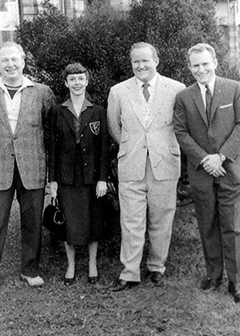

Chapter 12
Phoenix Rising
'Many awards and honors were offered and conferred on L. Ron Hubbard. He did accept an honorary Doctor of Philosophy given in recognition of his outstanding work on Dianetics and, as an inspiration to the many people . . . who had been inspired by him to take up advanced studies in this field.' (Mission Into Time, 1973)
 (Scientology's account of the years 1952-54.)
(Scientology's account of the years 1952-54.)
At the beginning of April 1952, Hubbard packed his belongings into the back of his yellow Pontiac convertible and headed out of Wichita on the Kansas Turnpike with his teenage bride of four weeks beside him on the front seat. Their destination, one thousand miles to the west, was Phoenix, Arizona, where loyal aides had already put up a sign outside a small office at 1405 North Central Street, announcing it as the headquarters of the Hubbard Association of Scientologists.
Phoenix was so named because it was built on the ruins of an ancient Indian settlement on the Salt River, which had risen like the legendary phoenix. Hubbard, who had had more than enough of Wichita, could not think of a more appropriate location for the rise of his astounding new science from the still-smoking ruins of Dianetics.
The word Scientology was derived from the Latin scio (knowing in the fullest sense) and the Greek logos (study). Hubbard erroneously believed it to be his own invention: but curiously and coincidentally, almost twenty years earlier in 1934, a German scholar by the name of Dr A. Nordenholz had written an obscure work of philosophical speculation titled Scientologie, Wissenschaft und der Beschaffenheit und der Tauglichkeit des Wissens (Scientology, the Science of the Structure and Validity of Knowledge). It was unlikely, however, that Hubbard was plagiarizing Dr Nordenholz - the book had not been translated into English and Hubbard's knowledge of German was rudimentary.
Hubbard would introduce Scientology as a logical extension of Dianetics, but it was a development of undeniable expedience, since it ensured he would be able to stay in business even if the courts
eventually awarded control of Dianetics and its valuable copyrights to 'that little flatulence', the hated Don Purcell. The difference between Dianetics and Scientology was that Dianetics addressed the body, whereas Scientology addressed the soul. With his accustomed bombast, Hubbard claimed that he had 'come across incontrovertible, scientifically-validated evidence of the existence of the human soul'.[1]
To underpin his new science, Hubbard created an entire cosmology, the essence of which was that the true self of an individual was an immortal, omniscient and omnipotent entity called a 'thetan'. In existence before the beginning of time, thetans picked up and discarded millions of bodies over trillions of years. They concocted the universe for their own amusement but in the process became so enmeshed in it that they came to believe they were nothing more than the bodies they inhabited. The aim of Scientology was to restore the thetan's original capacities to the level, once again, of an 'operating thetan' or an 'OT'. It was an exalted state not yet known on earth, Hubbard wrote. 'Neither Lord Buddha nor Jesus Christ were OTs according to the evidence. They were just a shade above Clear.'[2]
Throughout the early summer months of 1952, Hubbard promulgated the theory of Scientology at a series of lectures delivered at the Hubbard Association of Scientologists in Phoenix. He was addressing, for the most part, committed Dianeticists, people who truly believed him to be a genius, and so the audiences tended to be somewhat uncritical. But if validation of the cosmology was needed, it was constantly provided by the 'past lives' which were by now a prominent and fascinating feature of auditing.
Thetans were obviously not restricted to this universe and auditing sessions revealed innumerable accounts of space travel and adventures on other planets very similar to those found in the pages of Astounding Science Fiction, to which the founder of Scientology had so recently been contributing. One report described how a pre-clear had arrived on a planet 74,000 years ago and battled 'black magic operators' who were using electronics for evil purposes. 'He now goes to another planet by spaceship. A deception is accomplished by hypnosis and pleasure implants (rather like opium in their effects) whereby he is deceived into a love affair with a robot decked out as a beautiful red-haired girl . . .'[3]
'Past lives' were further confirmed by the flickering needle of the E-meter, which was enthusiastically adopted as propitious technological support. Invented by a Dianeticist called Volney Mathison, the E-meter was basically a device which measured galvanic skin response - the changes in electrical conductivity of the skin that occur at moments of even quite slight excitement or emotional stress. It proved
_______________
1. What is Scientology?, 1978 ed.
2. Ability no. 81, 1959
3. Have You Lived Before This Life?, ed. L. Ron Hubbard, 1968
to be such a useful auditing tool that it would eventually become invested with an almost mystical power to reveal an individual's innermost thoughts. It also provided a useful source of income, for every self-respecting Scientologist wanted to have his own E-meter and the only place to buy them was from the Hubbard Association of Scientologists.
In July, the Scientific Press of Phoenix (another Hubbard enterprise) published a book originally titled What To Audit and later re-named The History of Man. Introduced as a 'cold-blooded and factual account of your last sixty trillion years', Hubbard intended the book to establish the foundations of Scientology and he had no desire to be unduly modest about its potential. With the knowledge gained by Scientology, he wrote in the third paragraph, 'the blind again see, the lame walk, the ill recover, the insane become sane and the sane become saner.'
Even judged by the standards of his science fiction, The History of Man was one of Hubbard's most bizarre works and possibly the most absurd book ever written, although it was treated with great reverence by his followers. An amalgam of mysticism, psychotherapy and pure science fiction, the content invited the derision which was inevitably forthcoming. 'To say it is an astonishing document does not adequately convey the peculiar qualities or contents of The History of Man . . .' one government report[4] noted. 'For compressed nonsense and fantasy it must surpass anything theretofore written.'
In a narrative style that wobbled uncertainly between schoolboy fiction and a pseudo-scientific medical paper, Hubbard sought to explain that the human body was occupied by both a thetan and a 'genetic entity', or GE, a sort of low-grade soul located more or less in the centre of the body. ('The genetic entity apparently enters the protoplasm line some two days or a week prior to conception. There is some evidence that the GE is actually double, one entering on the sperm side . . .') The GE carried on through the evolutionary line, 'usually on the same planet', whereas the thetan only came to earth about 35,000 years ago to supervise the development of caveman into homo sapiens. Thus the GE was once 'an anthropoid in the deep forests of forgotten continents or a mollusc seeking to survive on the shore of some lost sea'. The discovery of the GE (Hubbard hailed every fanciful new idea as a 'discovery') 'makes it possible at last to vindicate the theory of evolution proposed by Darwin'.
Much of the book was devoted to a re-working of evolution, starting with 'an atom, complete with electronic rings' after which came cosmic impact producing a 'photon converter', the first single-cell creature, then seaweed, jellyfish and the clam. This knowledge was important to Scientologists since it enabled them to identify the kind
_______________
4. Report of the Board of Inquiry into Scientology, State of Victoria, Australia, 1965
of engrams a GE might have picked up when occupying a prehistoric life form.
Many engrams, for example, could be traced back to clams. The clam's big problem was that there was a conflict between the hinge that wanted to open and the hinge that wanted to close. It was easy to restimulate the engram caused by the defeat of the weaker hinge, Hubbard pronounced, by asking a pre-clear to imagine a clam on a beach opening and closing its shell very rapidly and at the same time making an opening and closing motion with thumb and forefinger. This gesture, he said, would upset large numbers of people.
'By the way,' he warned, 'your discussion of these incidents with the uninitiated in Scientology can cause havoc. Should you describe the "clam" to some one [sic], you may restimulate it in him to the extent of causing severe jaw pain. One such victim, after hearing about a clam death, could not use his jaws for three days.'
After the clam came the 'Weeper' or the 'Boohoo', a mollusc that rolled in the surf for half a million years, pumping sea water out of its shell as it breathed, hence its name. Weepers had 'trillions of misadventures', prominent among them the anxiety caused by trying to gulp air before being swamped by the next wave. 'The inability of a pre-clear to cry,' Hubbard explained, 'is partly a hang-up in the Weeper. He is about to be hit by a wave, has his eyes full of sand or is frightened about opening his shell because he may be hit.' Fear of falling also had its origins in the luckless Weepers, which were frequently dropped by predatory birds.
Progressing along the genetic time-track, evolution arrived at the sloth, which 'had bad times falling out of trees', the ape and the famous Piltdown Man, which was the cause of a multitude of engrams, ranging from obsessions about biting to family problems. These could be traced back to the fact that 'the Piltdown teeth were enormous and he was quite careless as to whom and what he bit.' Indeed, so careless was the Piltdown Man, Hubbard recorded, that he was sometimes guilty of 'eating one's wife and other somewhat illogical activities'.
(Unfortunately for Hubbard, just twelve months after The History of Man was published, the supposed fossil remains of primitive man found in gravel on Piltdown Common in the south of England were exposed as a hoax. The Piltdown Man had never existed. Hubbard was describing engrams caused by GEs occupying a fictitious early life form dreamed up in 1912 by Charles Dawson, the English amateur archaeologist responsible for the Piltdown fraud. )
The History of Man drifted into pure science fiction when Hubbard came to the point of explaining how thetans moved from body to body. Thetans abandoned bodies earlier than GEs, it appeared. While
the GE stayed around to see the body through to death, thetans were obliged to report to a between-lives 'implant station' where they were implanted with a variety of control phases while waiting to pick up another body, sometimes in competition with other disembodied thetans. Hubbard revealed that most implant stations were on Mars, although women occasionally had to report elsewhere in the solar system and there was a 'Martian implant station somewhere in the Pyrenees'.
After publication of the epoch-making The History of Man, Hubbard was not of a mind to rest on his dubious laurels. The Hubbard Association of Scientologists and the Scientific Press of Phoenix produced a veritable avalanche of publications during 1952, including another book, Scientology: 8-8008, which appeared only a few months after The History of Man. Continuing his tradition of audacious introductions, the author wrote: 'With this book, the ability to make one's body old or young at will, the ability to heal the ill without physical contact, the ability to cure the insane and the incapacitated, is set forth for the physician, the layman, the mathematician and the physicist.'
Both books were required reading for new Scientologists and were studied as if they were serious scientific textbooks, indicating the extraordinary hold Hubbard was beginning to exert over his followers. Non-Scientologists could never understand how he achieved a position of such omnipotence, but the power he wielded was far from unprecedented. Scientology already exhibited the classic characteristics of a religious sect, offering salvation through secret knowledge and totally dominated by a leader claiming a monopoly over the source of the knowledge. Many such 'manipulationist sects' flourished at different periods of Christian history.[5]
There were also striking parallels between Scientology and the quirkier pseudo-sciences like phrenology, Count Alfred Korzybski's general semantics and 'iridiagnosis', which taught that all physical ailments could be diagnosed through the iris of the eve. Many such pseudo-sciences were built on a structure of the wildest assumptions, yet attracted a devoted following. They were invariably the creation of a single, highly charismatic, individual viewed by his followers as a genius of divine inspiration. Absolute power was vested in the leader, critics were derided, successes loudly trumpeted and failures ignored. Opponents were darkly accused of ulterior motives in wanting to prevent the advancement of the human race - Hubbard's frequent plaint.
While Hubbard was writing and lecturing in Phoenix in the summer of 1952, a somewhat unexpected event occurred - his son, L. Ron Hubbard Junior, turned up in town apparently intent on becoming a
_______________
5. Religious Sects, Bryan Wilson, 1970
Scientologist. Nibs was then eighteen years old, a plump young man with a shining, cherubic countenance topped by wispy curls of pale orange hair. He had been living with his grandparents in Bremerton for the previous two years, but had been unable to settle down in high school and had decided to join his father in Phoenix. Mary Sue, preoccupied with her thickening waistline, raised no objection when her husband suggested that Nibs should move in with them, in the modern house they had rented near Camel Back Mountain, on the outskirts of town. And since she was only about a year older than Nibs, she felt under no obligation to be a dutiful stepmother.
|
 |
| The portly Nibs (second from right) posing with his father and friends in a London garden in the 1950s - the smiles would soon turn to tears when father and son fell out. |
In September 1952, Hubbard and Mary Sue left Phoenix for their first visit to Europe. The trip was explained to follow Scientologists somewhat illogically: 'Amid the constant violence of the turncoat Don J. Purcell of Wichita and his suits which attempted to seize Scientology, Mary Sue became ill and to save her life, Ron took her to England.' It was never spelled out why taking Mary Sue to England would save her life; indeed, since she was eight months pregnant it would have been much safer not to travel. But Hubbard wanted to go to London to establish his control over the small Dianetics group which had formed there spontaneously and Mary Sue insisted on accompanying him. The Hubbards' first impressions of London were gloomy. As they drove into the city from the airport, they were shocked by the extent of the bomb damage which they could see from the back of their taxi. The people on the streets seemed drab and dispirited, the shop windows were empty - rationing was still in force - and Hubbard thought there was an air of 'quiet desperation' about the place. He was also quietly desperate himself, having discovered that American cigarettes were unavailable. However, their spirits lifted somewhat when the taxi drew up outside 30 Marlborough Place, Maida Vale, the house that had been rented for them by local Dianeticists. It was a handsome, double-fronted late Edwardian villa with light, airy rooms, not far from Regent's Park and the West End.
Two nights later, Ron and Mary Sue were guests of honour at a welcoming dinner party arranged by a member of the Dianetics group who had an apartment only ten minutes' walk from Marlborough
Place. Among the guests was a woman called Carmen D'Alessio who, like most of those present, admitted to being 'totally fascinated' by Dianetics. She was, of course, greatly looking forward to meeting Hubbard, not least because she was hoping that he might be able to cure her of the unexplained attacks of panic she had suffered since she was a child.
'My first impression was of a big, tall man with a highly coloured face and brilliant red hair combed back from a high forehead. He was a very magnetic, powerful man, not really very attractive, but you couldn't ignore him. He dominated the evening, talking about energy, electronics, tractor beams, etcetera. I heard him say he'd been in the Navy and had some trouble with his leg and got the impression he was talking about a war injury.
'After dinner, when we were all sitting around, I told him about my problem and he immediately began to audit me. I was sitting on a sofa against a wall and he told me to do something that would prompt most people to think he was mad, although I thought I knew what he was talking about. What he said to me was, "Be three feet back of your head"- those were his exact words. I thought I would have to go into the wall, or the room behind, but I attempted to do it in my imagination. He gave me quite a long session, with everyone sitting around completely silent, but it did nothing.'
Not long afterwards, Carmen D'Alessio attended Hubbard's introductory lecture at his house in Marlborough Place. 'About 30 or 40 people were foregathered in the sitting-room and when Hubbard walked in it was obvious to me he had a bloody awful cold,' she recalled. 'He had a very high colour, much more so than normal, he was sweating profusely, his eyes were streaming and he kept blowing his nose. He even talked like man with a cold, but he told us that he was suffering from the effect of leaving his body and visiting another planet. While he was advancing across the floor of this other planet, he said, something like a bomb blew up in his face. Everyone was taking it very seriously, but I didn't believe it. I thought, "the man's a thumping liar." I was right. A nurse was living in the house at the time because Hubbard's wife was extremely pregnant. She was a friend of mine and she told me afterwards that he had flu. She'd even given him an injection for it.'
The nurse was soon obliged to direct her ministrations elsewhere: on 24 September, less than three weeks after arriving in London, Mary Sue gave birth to a daughter, Diana Meredith de Wolfe Hubbard. Ron cabled the good news back to Phoenix, adding a terse plea for cigarettes: 'SEND MORE KOOLS.'
Miss D'Alessio, meanwhile, was continuing to be audited by Hubbard, at his instigation, despite an unnerving experience during a
second session at Marlborough Place. 'While I was sitting there trying to do what he told me, I suddenly opened my eyes and saw that he was sitting opposite me laughing silently. I didn't like that at all.'
She was disappointed to register no improvement in her condition. 'It seemed quite useless, it wasn't helping at all. Two or three days afterwards I was feeling very disorganized, ragged and out of sorts. Friends kept telling me to ring Ron, but I didn't want to bother him. Eventually someone rang him and he said, "Put her on the line." He gave me a long session over the telephone lasting at least two hours, possibly three.
'At that time he was very interested in energy. He said, "I want you to mock up a small amount of energy, like a little ball and tell me when you have done it." Then he said, "Now blow it up, make it explode." This was going on subjectively in my imagination; I had no difficulty doing it. Then he said, "Now you have exploded it, gather it all together again and reduce it all down to the small ball of energy, make it solid again." I did that and he said, "Now explode it again." That is all the session consisted of.
'After I had been doing this for a while, possibly half an hour, my physical body began to react in an extraordinary way. It began of its own accord to jerk about unintentionally, first quite gently. I told him what was happening and he told me not to worry but continue doing what he told me. The jerking became stronger, almost out of my control. I felt quite frightened, but he remained very calm and gentle. Finally it seemed my body was being flung out of the chair and I had to hold the chair and the telephone with might and main. I could not possibly have made my body do what it was doing, I would have had to have been an acrobat or trained contortionist. I thought my heart was going to burst. My friends sitting in the room watching me were aghast, terrified.
'The explosions, which had become more and more violent, became less violent by degrees and in the end instead of violent explosions of vast energy it was more like a stone thrown into pond sending out ripples. The ripples became very pleasant and as they did so my body calmed down and became quite tranquil, as if I was lying in the sun on a hot day. All around me were beautiful colours like the Aurora Borealis, colours out of this world, very soothing and harmonious and completely restorative. This went on until I felt quite all right and then he said it was the end of the session.'
Hubbard was clearly pleased by the results he had obtained with Carmen D'Alessio and at his next public lecture, in a small hall near Holland Park, he invited her to tell the audience about her experience. Unfortunately, Miss D'Alessio began her account by describing how her heart had nearly stopped and Hubbard hastily interrupted. 'He
didn't want me to say any more,' she recalled. 'He never allowed anyone to say anything negative about him.[6]
In October, a British edition of Scientology: 8-8008 was published, with a note about the author from an unnamed editor: 'Some think of his work as the only significant enlargement of the mind since Freud's papers in the late 19th century; others think of it as the Western World's first workable organization of Eastern philosophy. It has been called by two of the leading writers in America: "The most significant advance of mankind in the 20th century" . . . Probably no philosopher of modern times has had the popularity and appeal of Hubbard or such startling successes within his own lifetime.'
At the end of November, Hubbard returned to the United States, with Mary Sue and the baby, to deliver a series of lectures in Philadelphia, where the Scientology franchise was being run by Helen O'Brien and her husband, who paid ten per cent of their gross earnings to Hubbard for the privilege. The O'Briens agreed to pay Hubbard a $1000 fee for the lectures; in addition they arranged a car for his use and rented an ultra-modern terraced apartment at 2601 Parkway, high above River Drive. Hubbard was pleased with it, declared it to be a 'science-fiction writer's dream' and at the same time tried to manoeuvre Helen O'Brien into signing the rental agreement. She knew him too well to be caught out like that. 'I told him, "It's your apartment, you sign the lease,"' she said. 'He was tricky like that.'[7]
Hubbard lectured for a total of seventy hours in Philadelphia to an audience of thirty-eight devotees, speaking without preparation or notes on three evenings and six afternoons each week between 1 and 19 December. Every word was recorded on high-fidelity tapes and later lucratively marketed as the 'Philadelphia Doctorate Course', along with a spiral-bound book of the fifty-four crayon drawings with which he illustrated his talks. Many of the seventy hours were devoted to elaborating the cosmology of Scientology, but he also talked about ways of 'exteriorizing' from the body and demonstrated a new auditing technique called 'creative processing', similar to the 'mock-up' routine he had tried out on Carmen D'Alessio.
'What made it interesting,' said Fred Stansfield, one of the students on the course, 'was the feeling that you were involved in the birth of a new, developing science. It looked like something you could do something with, not just some theory that was utterly useless.'[8]
The only small hiccup in the smooth running of the Philadelphia Doctorate Course occurred on the afternoon of 16 December, when US marshals thundered up the stairs of the Hubbard Dianetic Foundation at 237 North 16th Street, Philadelphia, waving a warrant
_______________
6. Interview with Carmen D'Alessio, London, Jan. 1986
7. Interviews with Helen O'Brien
8. Interview with Fred Stansfield, Burbank, July 1986
for the arrest of L. Ron Hubbard. Nibs, who was present and who had inherited something of his father's talent for story-telling, would later talk about an 'incredible Western-style' fight ensuing, with two hundred Scientologists battling on the stairs against FBI agents, US marshals and Philadelphia police.[9]
Helen O'Brien can recall no such mêlée. 'I was on the door so I know what happened. There was no fight. Two detectives in plain clothes and a policeman in uniform came in. I asked them what they wanted and they said, "We are here to arrest Ronald Hubbard". We were always apprehensive about plots to arrest Ron and I ran upstairs and told him what was happening. He went up to the third floor, but there was no escape. One of the students who had only one arm waved his hook at the cops and they backed down a bit, but they said, "We've got a warrant for Hubbard and we are going to take him". My husband and I got in the paddy-wagon with Ron. They fingerprinted him and put him a cell - it was the only time he was ever behind bars. I called my brother, who was a lawyer, and he got Ron out on $1000 bail later that afternoon.'
The cause of this spot of bother was Don Purcell, who was still doggedly pursuing Hubbard through the courts in an attempt to get some of his money back and keep the Wichita Foundation in business. When he heard Hubbard was in Philadelphia, Purcell filed an affidavit in Pennsylvania District Court accusing him of wrongfully withdrawing $9286 from the bankrupt Wichita Foundation. 'Throughout his Dianetic career,' the affidavit noted, 'Hubbard has displayed a fine talent for profiting personally although his firms and institutions generally fail.'[10]
Hubbard was examined before the bankruptcy court on 17 and 19 December, agreed to make restitution and was discharged. Very soon afterwards he flew back to London, where the Hubbard Association of Scientologists International, or HASI, had opened for business in a couple of draughty rooms above a shop in Holland Park Avenue in West London. They were unprepossessing premises for a science offering immortality, but Hubbard was not finding it easy to establish a base for Scientology in Britain. Helen O'Brien received a despairing letter from a friend describing the HASI offices in London: 'There was an atmosphere of extreme poverty and undertones of a grim conspiracy over all. At 163 Holland Park Avenue was an ill-lit lecture room and a bare-boarded and poky office some eight by ten feet, mainly infested by long-haired men and short-haired, tatty women.'
In February 1953, Hubbard decided it was necessary to bolster his status with the phlegmatic British by acquiring some academic qualifications. He knew precisely where they were available - from Sequoia University in Los Angeles. The 'university' of Sequoia was owned by
_______________
9. Evidence of L. Ron Hubbard Jr. at Clearwater hearings, May 1982
10. Bankruptcy file 23747, Federal Records Center, Philadelphia
Dr Joseph Hough, a chiropracteur and naturopath who ran a successful practice from a large house in downtown Los Angeles and conferred 'degrees' on whoever he thought merited them. Richard de Mille was awarded a Ph.D. from Sequoia, somewhat to his surprise, for a slim volume he had written under the title An Introduction to Scientology.
On 27 February, de Mille, who was then living in Los Angeles, received an urgent telegram from Hubbard in London: 'PLEASE INFORM DR HOUGH PHD VERY ACCEPTABLE. PRIVATELY TO YOU. FOR GOSH SAKES EXPEDITE. WORK HERE UTTERLY DEPENDANT ON IT. CABLE REPLY. RON.' De Mille found Hough thoroughly agreeable and replied the following day: 'PHD GRANTED. HOUGH'S AIRMAIL LETTER OF CONFIRMATION FOLLOWS. GOOD LUCK.' It was in this way that Hubbard acquired the distinction of appending letters to his name - a mysterious 'Doctorate of Divinity' would follow shortly, along with a 'D. Scn'.
It was clear from correspondence around this time that Hubbard was beginning to ponder the future of Scientology. Few of the franchises in the United States were generating much income and the organization had grown haphazardly into a cumbersome conglomeration of corporations spread around the country and increasingly difficult to control. He was also facing the relentless, if covert, opposition of J. Edgar Hoover and the FBI. Hoover's agents rarely failed to mention, in answer to inquiries about Hubbard, that his former wife claimed he was 'hopelessly insane'.[11]
At the beginning of March, Hubbard wrote to Helen O'Brien from London and asked her to go to Phoenix, close down the publishing operation and move it to Philadelphia. On the day she arrived, she learned that burglars had broken into Hubbard's house on East Tatem Boulevard, near Camel Back Mountain. She drove out there and found the house had been ransacked. Although she had no way of knowing what had been stolen, she assumed the thieves had been looking for the fabled manuscript of Excalibur. Two guns were certainly missing and she reported their serial numbers to the FBI.
With her usual efficiency, O'Brien packed up the 'communications center', shipped everything to Philadelphia and assumed editorship of the bi-monthly magazine, the Journal of Scientology, which was the primary channel of communication between Hubbard and his followers. In truth, editing the magazine was not too onerous a task, since almost everything was written by Hubbard. (Whenever he wished to discuss his own wondrous work in glowing terms, he signed the articles 'Tom Esterbrook'.)
On 10 April, Hubbard wrote another long letter to Helen O'Brien discussing the possibility of setting up a chain of HASI clinics, or
_______________
11. Letter from office of J. Edgar Hoover to Senator Homer Ferguson, 2 Mar 1953
'Spiritual Guidance Centers'. They could make 'real money', he noted, if each clinic could count on ten or fifteen pre-clears a week, each paying $500 for twenty-four hours of auditing. He had clearly previously discussed the prospect of converting Scientology into a religion. 'I await your reaction on the religion angle,' he wrote. 'In my opinion, we couldn't get worse public opinion than we have had or have less customers with what we've got to sell. A religious charter would be necessary in Pennsylvania or NJ to make it stick. But I sure could make it stick.'
Perhaps inspired by such considerations, Hubbard's next published work bore a distinctly Old Testament flavour. The Factors was a summation of his '30-year examination' of the human spirit and the material universe: 'Factor No. 1: Before the beginning was a Cause and the entire purpose of the Cause was the creation of effect.' At the end of the thirty factors was a valediction reading, 'humbly tendered as a gift to Man by L. Ron Hubbard.'
Three weeks later, the humble tenderer of gifts to mankind was writing to Helen O'Brien in a rather less pious fashion about a particular member of the species who continued to be a thorn in his side - Don Purcell. 'The obvious intention of Purcell is to attack and wipe out by public odium anything and everything he can in Dianetics, thus leaving him, he thinks, with a monopoly on the subject. Sooner or later it is quite obvious that this man . . . who is probably the most hated man in the city of Wichita because of his business dealings, will run up against somebody insane enough to put a bullet through him . . . Patently the man is insane. He has actively refused processing many times. He's about as safe to have around as a mad dog . . . The only surprising part of all this is that the American public by their attention to Purcell and what he says, demonstrates their complete incompetence and their desire to be swindled.'
At the end of May, Hubbard announced his intention to stir up some interest in Scientology on the continent and he left London for Spain by car, with Many Sue, who had recently discovered she was pregnant again, and baby Diana, then eight months old. They stayed first in Sitges, a small resort on the Mediterranean coast, then drove further south to Seville. It seems they did little other than enjoy an extended holiday, although Helen O'Brien, who was virtually running Scientology in the United States, continued to receive long, rambling letters in Hubbard's untidy scrawl.
On 19 July, he wrote nine pages asking her to get one of her 'electronic eager beaver' friends to construct an extraordinary machine with which he believed he would be able to cure insanity. The device was to be disguised as an ordinary briefcase with the trigger incorporated in the lock and it was to be capable of delivering a concentrated
supersonic beam alternating approximately between breathing and heart rates, thus inducing hypnosis. He wanted to be able, he said, to walk into a sanatorium with his secret machine, confront an insane patient and make him sane in a few seconds. 'This would mean', he wrote, 'the immediate end of psychiatric resistance to Scientology.' O'Brien was to get the machine made up as a matter of urgency and air-freight it to him in Spain with a spurious explanation of its function for the benefit of the Customs officials.
On 15 August he wrote again, pleading with her to make sure the machine was finished by the time he arrived back in the United States in mid-September. He added that he had been working with children very successfully: 'I can make kids walk in a few minutes who were crippled . . . I can solve any case and teach people to solve any case without failure. I know the mind like a surveyor knows a map. That sets me free, like the genie of the uncorked bottle.'
The 'genie' returned to Philadelphia at the end of September in time to address the three-day International Congress of Dianeticists and Scientologists at the Broadwood Hotel. With more than three hundred delegates attending, the event was a great success, but by this time the organizers, Helen O'Brien and her husband, were exhausted and disillusioned. They had been at Hubbard's beck and call for most of the year, receiving little in return. 'As soon as we became responsible for Hubbard's interests,' Helen O'Brien recorded, 'a projection of hostility began, and he doubted and double-crossed us, and sniped at us without pause.' They had no desire to take it any more and resigned. Helen O'Brien would forever recall her parting, regretful words to Hubbard: 'You're like a cow who gives a good bucket of milk, then kicks it over.'
In October and November, Hubbard lectured to the Hubbard Association in Camden, New Jersey, just actress the Delaware River from Philadelphia. Mary Sue would normally have been present at every lecture, but she was forced by her pregnancy and the endless demands of an active toddler, to spent most of the time at home - yet another rented house, this time at Medford Lakes, about twenty miles from Camden. Nibs, who had recently married his long-time girlfriend, Henrietta, in Los Angeles, came to visit and was given a job in the Camden 'org', a Scientology abbreviation for organization.
The Hubbards returned to Phoenix for Christmas, to the house near Camel Back Mountain, and on 6 January 1954, Many Sue gave birth to her second child, a son, Geoffrey Quentin McCaully Hubbard.
Deprived of the services of Helen O'Brien, Hubbard tried to entice Richard de Mille back into the fold, only to discover that he, too, had become disillusioned. 'I wanted to find the true answer to everything,'
de Mille explained, 'but I didn't like all the contradictions and I was becoming more and more sceptical of the whole thing. There was a constant pyramiding of claims, but the performance was always deficient. The answer to the deficiency was that we didn't have a particular step quite right, but now we had another step and this time it's going to be right.
'When Hubbard called me and said, "I miss you. Why don't you come back?" I was somewhat critical and expressed my scepticism. His reaction was typical. "Who's gotten to you, Dick?" he asked. To him, there was no such thing as simply being unconvinced.'
Despite the defections, Scientology prospered in Phoenix, so much so that in April 1954, the HASI moved into sumptuous new premises on a corner site at 1017 North Third Street. Formerly an apartment building, the new headquarters had wide Spanish-style colonnaded porches offering shade from the fierce Arizona sun on both first and second floors. Outside there was a large parking lot lined with palm trees and inside an auditorium with the latest recording facilities, more than twenty auditing rooms, comfortable offices for the executives and a swimming pool. In a brochure printed to celebrate the move, a picture of a beaming L. Ron Hubbard, C.E., D. Scn., D.D. could be found on the inside front cover and a similarly beaming L. Ron Hubbard Jr., H.G.A., D.Scn., on the inside back cover. 'Ten thousand years of thinking men have made this science possible,' the introduction proclaimed. 'L. Ron Hubbard has spent more than 30 years perfecting Dianetics and Scientology to the point of practical application .'
The house at Camel Back, where the Hubbards were enjoying an unaccustomed period of residential stability, became a gathering place for whichever courtiers happened to be in favour at the time. One of them was an Englishman by the name of Ray Kemp, who had no doubt that Hubbard possessed supernatural powers. 'He could certainly move clouds around in the sky,' said Kemp. 'I saw him do that. If there were a lot of little puffy clouds in the sky he could move one in one direction and one in another and then get them to join up. It was nothing particularly special for him; it was just a fun thing to do.'
Kemp liked to say he had found Scientology in a wastepaper basket. He was serving as a Royal Navy radar technician in Malta and was looking for something to read at a dull party when he spotted a discarded copy of Astounding Science Fiction. It was the Dianetics issue. He read it avidly, then bought the book and enrolled for an auditing course at Holland Park Avenue when he was next in London on leave. By 1954 he had made his way to Phoenix, where he was working for the org as an auditor.
'I spent quite a bit of time with Ron and Mary Sue out at Camel
Back. We used to swap war stories and try to cap each other's yarns. He was a wonderful story-teller and he'd make a story fit whatever point he was trying to make. I don't think he ever expected me to take his war stories seriously, although I knew he had been wounded because one night he kept complaining of a pain in his side and when he stood up a little bit of shrapnel fell out from under his shirt. He said it was something that often happened - fragments of shrapnel still in his body were slowly working their way out.
'One of the things he liked to do was ride his motorcycle - he had an Indian, a real monster - out into the desert. He played a game he called point to point. He'd pick a spot on the horizon and go for it, straight as he could, without deviating, regardless of what was in the way, cactus or whatever. Nibs and Dick Steves, from the org, used to chase him on their motorcycles, but Ron's favourite trick was to put up dust devils behind him. That's another thing he could do - manipulate dust devils. He could whip them up and move them around at will. I often saw him do that.'[12]
Ray Kemp exemplified a propensity in Hubbard's disciples to build myths around him. There was also a marked tendency to treat everything he said as gospel, which led to frequent misunderstandings as Hubbard liked to make jokes. Once, during a lecture in Phoenix, he made a crack about a Colt .45 being an 'enormously effective' method of exteriorization. As this ludicrous piece of wisdom was disseminated, a story grew that Hubbard had drawn a gun during the lecture and fired a round into the floor. Nibs swore later that he had seen the hole in the floorboards.
Jack Horner joined the circle close to Hubbard that summer of '54. Like so many of the early Dianeticists he had fallen out with Hubbard, in his case after Hubbard had accused him of fiddling the accounts, but typically he found he could not stay away. He pretended he was in Phoenix to see some friends who were working for the org and naturally ran into Hubbard.
'He asked me what I was doing and I said "teaching school" and he said, "we'll soon fix that" and he began to run a process on me right there and then. He told me to go and touch certain things in the room and then sit down at a desk. Then he said, "Now you go touch them" and I knew exactly what he meant. While I was sitting there I suddenly found myself looking at the underside of the desk. I had a definite, certain reality of myself out of my body. I said "Oh my God, I'm out of my body!" At that point I knew what he meant by exteriorization.
'Later, when I was working for him doing research in Phoenix, I was out at his home late one afternoon with Jim Pinkham, who did all the recording at the org, and someone knocked at the door. Ron went
_______________
12. Interview with Ray Kemp, Palomar, CA., Aug 1986
and talked to a guy outside for about five minutes and came back with a big grin on his face. He said the guy at the door wanted to give him a cheque for $5000 for a copy of Excalibur. Then he laughed out loud and said, "One of these days I'll have to get round to writing it." We cracked up. It was the only time Ron ever admitted there was no such book.
'It didn't matter too much to us. From our standpoint at that time Scientology was the only game in town and it was Ron's game. It was like exploring the moon, like being in the space programme, except that we were exploring the mind instead of space. Religion didn't cut it, psychology didn't cut it. If Ron wanted to tell tall stories about himself to make himself look good, so what? We didn't worry a whole lot about it. His genius outflowered his craziness.'[13]
Many of Ron's most fervent admirers, Horner included, found it difficult to include Mary Sue in their devotion. 'I hated her,' said Horner. 'She was a real tight-lipped Baptist. One night I got into a fight with her because she called my girlfriend a whore. I really tore into her verbally and Hubbard threw me out of the house.'
Hubbard would never allow anyone to criticize Mary Sue and although he rarely showed much affection for her in public, it seemed, after two failed marriages and innumerable affairs, that he had at last formed a stable relationship, improbable as it had first appeared. They were indeed an unlikely couple - a flamboyant, fast-talking extrovert entrepreneur in his forties and a quiet, intense young woman twenty years his junior from a small town in Texas. But anyone who underestimated Mary Sue made a big mistake. Although she was not yet twenty-four years old, she exercized considerable power within the Scientology movement and people around Hubbard quickly learned to be wary of her. Fiercely loyal to her husband, brusque and autocratic, she could be a dangerous enemy. She also had a remarkable capacity for motherhood; only four months after Quentin was born, she was pregnant again.
In June, the Hubbard Association of Scientologists International produced an imaginative re-working of Hubbard's biography in a letter to the Better Business Bureau in Phoenix, clearly designed to improve HASI's standing in the town. Much new information was included, not all of it entirely comprehensible.
The mysterious Commander Tompson [sic], for example, was said in the letter to have 'instituted psychoanalysis in the US Navy for use in flight surgery'. A Dr William Alan White, superintendent of St Elizabeth's, a government asylum in Washington, made his debut as someone under whom Hubbard had trained and mention was made of a hitherto unmentioned book: 'In 1947 Hubbard published a book for the Gerontological Society and the American Medical Association called Scientology. A New Science.'
_______________
13. Interview with Horner
This non-existent publication, it seemed, was 'politely received', but thereafter events had conspired against the scientist-author. Like 'almost any nuclear physicist' he had often written science fiction 'for amusement' and unscrupulous publishers took advantage of this fact. While poor Ron wanted nothing for himself but to be left in peace to continue his study and research, he was pressurized to produce a popular book for Hermitage House, who then 'unwisely' published an article in a pulp magazine. The sorry tale continued with Hubbard constantly being taken advantage of by all and sundry, with everyone but Ron trying to make money out of his discoveries and his wicked estranged wife threatening to stir up a 'great deal of scandal'.
However, the biography had a happy ending in Phoenix in the Hubbard Association of Scientologists - the first organization in the field to be under Hubbard's sole control and therefore untainted by all the previous manoeuvrings. It had established a two-year record of good repute and responsibility, paid its bills promptly 'as any Phoenix business firm with which it deals can attest' and was following a policy of quiet, orderly business. It was soon intending to make Scientology available to the disabled 'as a public service'.
The letter was signed by John Galusha, the secretary of the HASI board of directors. It was, no doubt, written in good faith, for Galusha was a thoroughly decent, deeply committed Scientologist. He had been working on the railroad in Colorado when he first heard about Dianetics and had thrown himself into it wholeheartedly. 'I thought it was a privilege to work for Ron,' he said. 'Maybe he was a charlatan and a liar - I didn't care. The point was that the tech was good. It worked.'[14] The 'tech' was the commonly used contraction for what Hubbard, the engineer, liked to describe as 'the technology' of Scientology.
Galusha did not get to know Hubbard particularly well, but then very few people did. Jack Horner recalled a strange remark Hubbard once made: 'We were out the back of his house and he was draining the radiator of his car because it was going to be unexpectedly cold that night. I said to him, "You know Ron, it would be nice if we could be closer friends." There was a silence for a moment, then he replied, "Yeah, it would be nice, but I can't have any friends."'
For Hubbard, the best news of 1954 came towards the end of the year when he heard from Wichita that Don Purcell was giving up the fight for control of Dianetics. Purcell had tired of the seemingly endless litigation and the constant attacks from Scientologists. He had also became interested in an offshoot of Dianetics called Synergetics and when he decided to devote his future resources to Synergetics he handed the Wichita Foundation's copyrights and mailing lists back to Hubbard, thankful to disentangle himself from the man he had once considered a saviour.
_______________
14. Interview with Galusha, Denver, Colorado, March 1986
Purcell's retreat could not have come at a more apposite moment. With Dianetics and Scientology at last firmly under his control, Hubbard was ready to follow his own often-voiced advice: 'If a man really wanted to make a million dollars, the best way to do it would be to start a religion.'